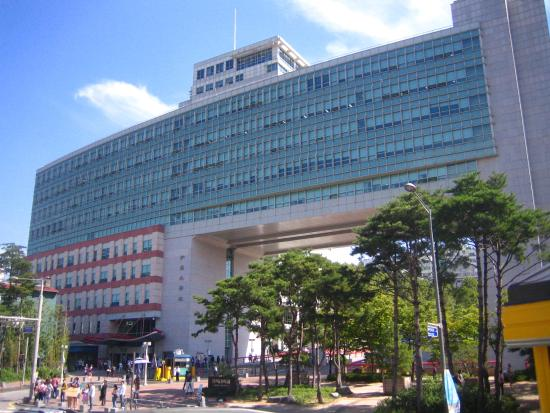

EDUCATION

Four college or university institutions, including Sogang University and Hongik University,
are active in Mapo District. The area around Hongik University, also known as Hongdae,
is well known as one of the cultural centers of Seoul, and was named one of the coolest neighborhoods in the world in 2016.[3]
There are eight high schools, including Seoul Girls' High School, along with 12 middle schools and
20 elementary schools serving the community. There are three special schools for handicapped or
industrial educations. Due to the presence of university students in the district,
Mapo District offers a large variety of shopping and dining options.
The area around Ewha Women's University is known for its affordable yet trendy merchandise,
while neighboring Shinchon has an enormous number of take out and sit down restaurants.